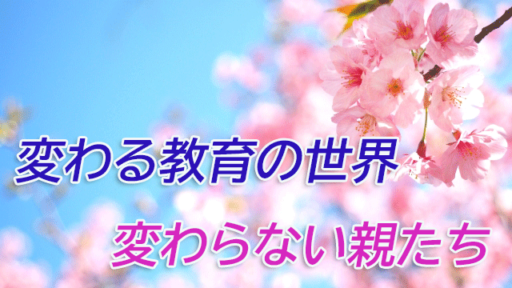

「私の学習を妨げた唯一のものは私が受けた教育である」
これはアインシュタインの言葉だが含蓄のある文言だと思う。
教育は必要だと誰もが思っているが、教育は時によっては人間の可能性の芽を摘んでしまうことを忘れてはならない。
特に教育に携わる者はその事実をいつも心の内に留めておかなければならないと思っている。
国が行う教育も会社なり特定の組織や集団の行う教育行為も本当は注意が必要だ。
それらの「教育」は個人の能力や才能を伸ばすことより、その集団に適合する人間を養成することに主眼が置かれるからだ。
学校教育とて例外ではない。
その国ごとの価値観や守るべき決めごとまたその時代ごとの常識やルールを学校教育は体現している。そこからハミ出した人間を矯正し、特定の型にハメ込むのが学校教育の主要な任務とも言えるからだ。
人間を社会に適応させると言えば聞こえはいいが、要するに人を型にはめて平均化するのが教育のもつ否定できない側面であり、型に収まり切れない大きな器をもった人間はかえって育ちにくいという皮肉な結果になりがちだ。
先のアインシュタインの言葉もそのことを言い表している。
だが幸いなことにというべきか、教育の世界もいま急速に変わりつつある。
無意味で理不尽な校則の押しつけをやめる。制服などの廃止。生徒の自由な発想や議論を取り入れる授業。一つだけの正解を求めるより多様な問題解決の方法を探らせる手法。等々…。
全体に、教える側の一方的な強制から教わる側の主体性を認める方向へとシフトしている。
これは逆に言えば、正解をただ覚えれば良いとか決められたルールさえ守れば安心という従来型の「良い子」ほど、受け身で主体性がなく優秀ではないと見なされることになる。
優秀の定義が変わったといえる。
これらの改革が本当に子どもたちの可能性を伸ばす方向に進化していくのか。大きな器をもつ子をそれに見合うだけの機会を与え伸ばしていけるのか、それはまだ分からない。
しかし少なくとも学校が特定の価値やルールを強制し、子どもたちを狭いオリの中に閉じ込めて才能の芽をつぶすような方向から脱却していくことだけは間違いない。
長く続いてきた日本の教育の特性―集団主義、平均主義、暗記中心主義、単一的価値観と数値的序列主義―からの脱却。
それに代わって個性、多様性、主体的な問題解決能力、創造性などがより重視される。
すでに大学入試では上のような能力を評価する形に変わっている。
いちばん気づいていないのはもしかしたら親のほうかも知れない。
子をもつ親はただ「勉強しなさい」と言うだけでなく、いまの時代子どもにどんな力をつけさせるべきかについてもういちど根底から考えてみて欲しいと思う。
◇◇◇◇◇◇◇◇◇◇◇◇◇◇◇◇◇◇◇◇◇◇◇◇◇◇◇◇
長老カフェぶっちゃけ教育トーク第６回を公開しました！
「小学生の親からの質問に答えます！
長老カフェ第6回『保護者からの質問』〜小学生編〜」
是非ご視聴ください。